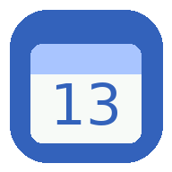

ANA EKRAN KISAYOLU
Takvim
Etkinlikler ve planlar
Kurulum yöntemi kontrol ediliyor…
Önemli: Bu işlem mevcut simgeyi değiştirmez, yeni bir simge ekler. Yeni kurulum notlarınızı, takvim bilgilerinizi veya anonim sohbet oturumunuzu otomatik devralmayabilir. Eski simgeyi hemen silmeyin.
Günlük uygulamasına dönGünlük · iPhone / Android · v1.5